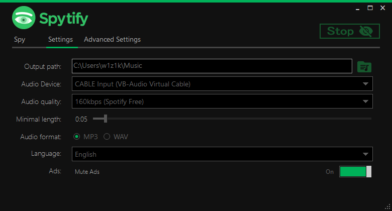
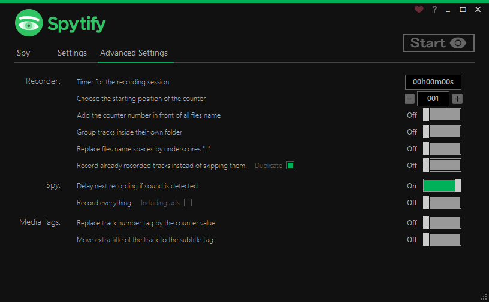

| Parameter |
Description and values |
Default value |
| Output path |
Folder where recorded songs will be stored |
Music |
| Audio device |
Audio device that Spytify will listen on. Must be the same one than Spotify uses, for Spytify to be able to record. Spotify/Spytify default audio endpoint can be change in Windows 🡂 Sound Settings 🡂 App volume and device preferences. More details in F.A.Q. |
Default |
| Audio quality |
From Low to High 128kbps 160kbps (Spotify Free)¹ 256kbps 320kbps (Spotify Premium)² |
160kbps¹ |
| Minimal length |
Remove songs shorter that the time set |
30s |
| Audio format |
WAV and MP3 (adds media info and album cover) |
MP3 |
| API (ID3 Media tags) ** |
** Needs to haveAudio format set to MP3. Then you can choose to keep the default LastFM API or use the more advanced API. Spotify API requires client id/secret keys to work. So follow these instructions to set it up. |
LastFM API** |
| Language |
Currently supporting English, French, Dutch and German |
English |
| Ads |
Mute audio ads when detected |
On |
¹ Spotify Free account will stream at a max rate of 160kbps, so you shouldn’t go above that quality.
² Spotify Premium account will stream at a max rate of 320kpbs (if max quality is enabled in Spotify settings), so you shouldn’t go above that quality.
| Recorder Parameter |
Description and values |
Default value |
| Timer for the recording session |
It sets a timer that will stop the recording session after the giving time until the end of the playing track |
00h00m00s |
| Choose the starting position of the counter |
Changing the position will take effect if one of the recording number options below is enabled. Change this number when resuming an old recording session. More details in F.A.Q. |
001 |
| Add the counter number in front of all files name |
Add a recording order number infront of files name 001 Artist - Title.mp3 |
Off |
| Group artists inside their own folder |
Group songs by folder titled with the artist’s name and remove the artist of the file name ../Artist/Title.mp3 |
Off |
Replace files name spaces by underscores _ |
Remove from the file name any space and replace it by underscores Artist_-_Title.mp3 |
Off |
| Record already recorded tracks instead of skipping them |
When the feature is On: If Duplicate is checked and the current track was already recordedSpytify will just add a number to the file name and keep recording, otherwise it will overwrite the file that matches the track title. When off Spytify won’t record if the track was already recorded. |
Off (skip) |
| Spy Parameter |
Description and values |
Default value |
| Delay next recording if sound is detected |
Delay the recording of the next song if sound is detected or the 1 second timeout is reached |
On |
| Record everything |
Records anything that plays and unmute ads, because podcasts are detected as an ad |
Off |
| Media Tags Parameter |
Description and values |
|
| Default value |
|
|
| Replace track number tag by the counter value |
Replace the album track number in the media info by the recording order number |
Off |
| Move extra title of the track to the subtitle tag |
Spytify will always set the track detail Live/Remastered like Artist - Title (feat. Other) - Live to the subtitle tag. However if it records a track like Artist - Title (feat. Other), it can set the part between parenthesis as the subtitle tag if this feature is turned On |
Off |
{kind=link}
{kind=link}